Hoạt ảnh sprite 2D
Giới thiệu
Trong bài hướng dẫn này, bạn sẽ học cách tạo nhân vật 2D có hoạt ảnh bằng lớp AnimatedSprite2D và AnimationPlayer. Thông thường, khi bạn tạo hoặc tải về một nhân vật có hoạt ảnh, nó sẽ ở một trong hai dạng: các hình ảnh riêng lẻ hoặc một sprite sheet duy nhất chứa tất cả frame của hoạt ảnh. Cả hai đều có thể tạo hoạt ảnh trong Godot bằng lớp AnimatedSprite2D.
Trước tiên, chúng ta sẽ dùng AnimatedSprite2D để tạo hoạt ảnh cho một tập hình ảnh riêng lẻ. Sau đó, chúng ta sẽ tạo hoạt ảnh cho một sprite sheet bằng lớp này. Cuối cùng, chúng ta sẽ học một cách khác để tạo hoạt ảnh cho sprite sheet với AnimationPlayer và thuộc tính Animation của Sprite2D.
Ghi chú
Hình ảnh cho các ví dụ sau do https://opengameart.org/users/ansimuz và tgfcoder thực hiện.
Hình ảnh riêng lẻ với AnimatedSprite2D
Trong tình huống này, bạn có một tập hình ảnh, mỗi hình chứa một frame hoạt ảnh của nhân vật. Trong ví dụ này, chúng ta sẽ dùng hoạt ảnh sau:
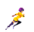
Bạn có thể tải các hình ảnh tại đây: 2d_sprite_animation_assets.zip
Giải nén các hình ảnh và đặt chúng vào thư mục dự án. Thiết lập cây scene với các node sau:
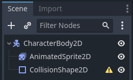
Ghi chú
Node gốc cũng có thể là Area2D hoặc RigidBody2D. Hoạt ảnh vẫn được tạo theo cách tương tự. Sau khi hoàn thành hoạt ảnh, bạn có thể gán hình dạng cho CollisionShape2D. Xem Giới thiệu về vật lý để biết thêm thông tin.
Giờ hãy chọn AnimatedSprite2D và trong thuộc tính SpriteFrames của nó, chọn "New SpriteFrames".
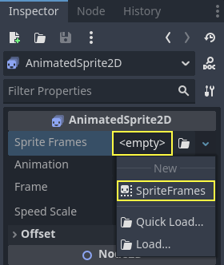
Nhấp vào resource SpriteFrames mới và bạn sẽ thấy một panel mới xuất hiện ở cuối cửa sổ trình chỉnh sửa:
Từ FileSystem dock ở bên trái, kéo 8 hình ảnh riêng lẻ vào phần giữa của panel SpriteFrames. Ở bên trái, đổi tên hoạt ảnh từ "default" thành "run".
Dùng các nút "Play" ở phía trên bên phải ô Filter Animations để xem trước hoạt ảnh. Giờ bạn sẽ thấy hoạt ảnh đang phát trong viewport. Tuy nhiên, nó hơi chậm. Để khắc phục, hãy đổi cài đặt Speed (FPS) trong panel SpriteFrames thành 10.
Bạn có thể thêm hoạt ảnh khác bằng cách nhấp nút "Add Animation" và thêm hình ảnh.
Điều khiển hoạt ảnh
Khi hoạt ảnh đã hoàn tất, bạn có thể điều khiển nó qua code bằng các phương thức play() và stop(). Đây là ví dụ ngắn để phát hoạt ảnh khi giữ phím mũi tên phải và dừng khi nhả phím.
extends CharacterBody2D
@onready var _animated_sprite = $AnimatedSprite2D
func _process(_delta):
if Input.is_action_pressed("ui_right"):
_animated_sprite.play("run")
else:
_animated_sprite.stop()
using Godot;
public partial class Character : CharacterBody2D
{
private AnimatedSprite2D _animatedSprite;
public override void _Ready()
{
_animatedSprite = GetNode<AnimatedSprite2D>("AnimatedSprite2D");
}
public override void _Process(double delta)
{
if (Input.IsActionPressed("ui_right"))
{
_animatedSprite.Play("run");
}
else
{
_animatedSprite.Stop();
}
}
}
Sprite sheet với AnimatedSprite2D
Bạn cũng có thể dễ dàng tạo hoạt ảnh từ sprite sheet với lớp AnimatedSprite2D. Chúng ta sẽ dùng sprite sheet thuộc phạm vi công cộng (public domain) này:
Nhấp chuột phải vào hình ảnh và chọn "Save Image As" để tải về, sau đó sao chép hình ảnh vào thư mục dự án.
Thiết lập cây scene giống như khi dùng hình ảnh riêng lẻ trước đó. Chọn AnimatedSprite2D và trong thuộc tính SpriteFrames của nó, chọn "New SpriteFrames".
Nhấp vào resource SpriteFrames mới. Lần này, khi panel phía dưới xuất hiện, chọn "Add frames from a Sprite Sheet".
Bạn sẽ được yêu cầu mở một file. Hãy chọn sprite sheet của bạn.
Một cửa sổ mới sẽ mở ra, hiển thị sprite sheet. Việc đầu tiên cần làm là thay đổi số hình ảnh theo chiều dọc và chiều ngang trong sprite sheet. Trong sprite sheet này, có bốn hình theo chiều ngang và hai hình theo chiều dọc.
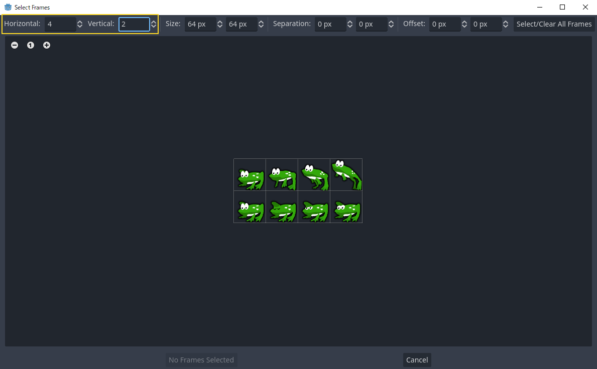
Tiếp theo, chọn các frame từ sprite sheet mà bạn muốn đưa vào hoạt ảnh. Chúng ta sẽ chọn bốn frame trên cùng, rồi nhấp "Add 4 frames" để tạo hoạt ảnh.
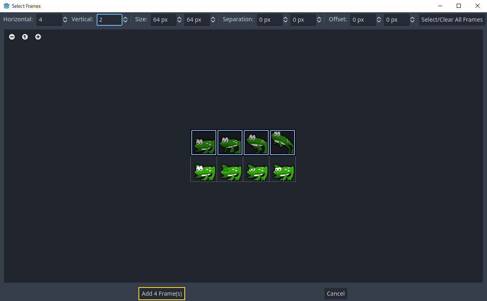
Giờ bạn sẽ thấy hoạt ảnh trong danh sách hoạt ảnh ở panel phía dưới. Nhấp đúp vào default để đổi tên hoạt ảnh thành jump.
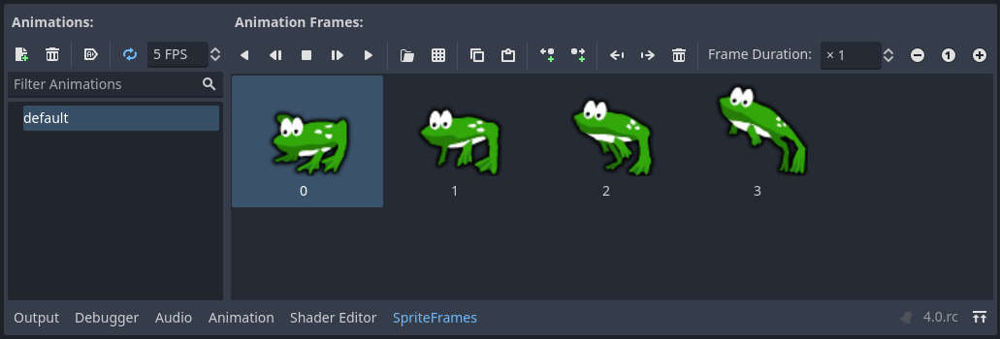
Cuối cùng, nhấn nút play trên trình chỉnh sửa SpriteFrames để xem chú ếch nhảy!
Sprite sheet với AnimationPlayer
Một cách khác để tạo hoạt ảnh khi dùng sprite sheet là dùng node Sprite2D tiêu chuẩn để hiển thị texture, rồi tạo hoạt ảnh cho việc chuyển từ texture này sang texture khác bằng AnimationPlayer.
Hãy xem sprite sheet này, chứa 6 frame hoạt ảnh:
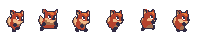
Nhấp chuột phải vào hình ảnh và chọn "Save Image As" để tải về, sau đó sao chép hình ảnh vào thư mục dự án.
Mục tiêu của chúng ta là hiển thị lần lượt các hình ảnh này theo vòng lặp. Hãy bắt đầu bằng việc thiết lập cây scene:
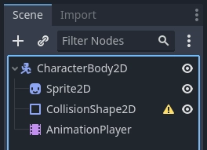
Ghi chú
Node gốc cũng có thể là Area2D hoặc RigidBody2D. Hoạt ảnh vẫn được tạo theo cách tương tự. Sau khi hoàn thành hoạt ảnh, bạn có thể gán hình dạng cho CollisionShape2D. Xem Giới thiệu về vật lý để biết thêm thông tin.
Kéo spritesheet vào thuộc tính Texture của Sprite, và bạn sẽ thấy toàn bộ sheet hiển thị trên màn hình. Để cắt nó thành các frame riêng lẻ, hãy mở rộng mục Animation trong Inspector và đặt Hframes thành 6. Hframes và Vframes là số frame theo chiều ngang và chiều dọc trong sprite sheet.

Giờ hãy thử thay đổi giá trị của thuộc tính Frame. Bạn sẽ thấy nó nằm trong khoảng từ 0 đến 5 và hình ảnh do Sprite2D hiển thị thay đổi tương ứng. Đây là thuộc tính chúng ta sẽ tạo hoạt ảnh.
Chọn AnimationPlayer và nhấp nút "Animation" rồi "New". Đặt tên hoạt ảnh mới là "walk". Đặt độ dài hoạt ảnh thành 0.6 và nhấp nút "Loop" để hoạt ảnh lặp lại.
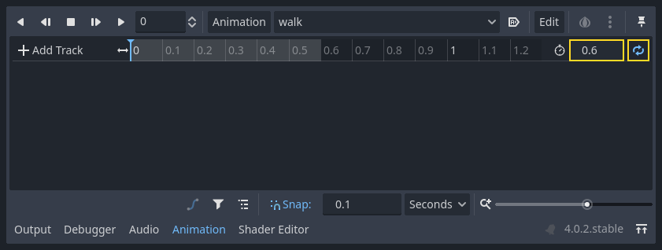
Giờ chọn node Sprite2D và nhấp biểu tượng chìa khóa để thêm track mới.

Tiếp tục thêm frame tại mỗi điểm trên timeline (mặc định là 0.1 giây), cho đến khi có đủ tất cả frame từ 0 đến 5. Bạn sẽ thấy các frame xuất hiện trong track hoạt ảnh:
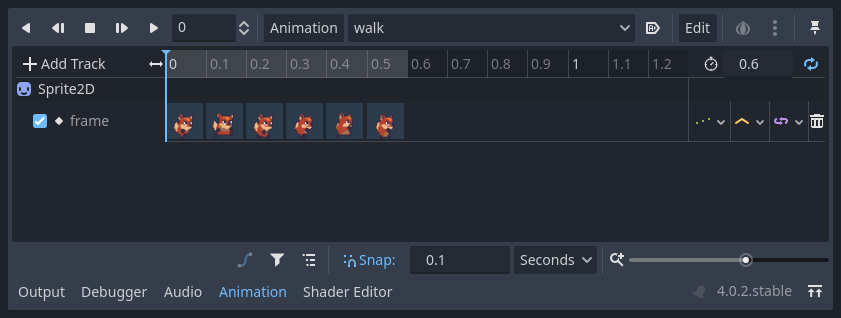
Nhấn "Play" trên hoạt ảnh để xem nó trông thế nào.
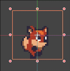
Điều khiển hoạt ảnh AnimationPlayer
Giống như với AnimatedSprite2D, bạn có thể điều khiển hoạt ảnh qua code bằng các phương thức play() và stop(). Một lần nữa, đây là ví dụ phát hoạt ảnh khi giữ phím mũi tên phải và dừng khi nhả phím.
extends CharacterBody2D
@onready var _animation_player = $AnimationPlayer
func _process(_delta):
if Input.is_action_pressed("ui_right"):
_animation_player.play("walk")
else:
_animation_player.stop()
using Godot;
public partial class Character : CharacterBody2D
{
private AnimationPlayer _animationPlayer;
public override void _Ready()
{
_animationPlayer = GetNode<AnimationPlayer>("AnimationPlayer");
}
public override void _Process(double delta)
{
if (Input.IsActionPressed("ui_right"))
{
_animationPlayer.Play("walk");
}
else
{
_animationPlayer.Stop();
}
}
}
Ghi chú
Nếu cập nhật đồng thời một hoạt ảnh và một thuộc tính riêng (ví dụ, game platformer có thể cập nhật thuộc tính h_flip/v_flip của sprite khi nhân vật quay người đồng thời bắt đầu hoạt ảnh 'quay người'), cần lưu ý rằng play() không được áp dụng ngay lập tức. Thay vào đó, nó được áp dụng vào lần tiếp theo AnimationPlayer được xử lý. Việc này có thể rơi vào frame tiếp theo, gây ra một frame 'lỗi', trong đó thay đổi thuộc tính đã được áp dụng nhưng hoạt ảnh thì chưa. Nếu điều này gây vấn đề, sau khi gọi play(), bạn có thể gọi advance(0) để cập nhật hoạt ảnh ngay lập tức.
Tóm tắt
Các ví dụ này minh họa hai lớp bạn có thể dùng trong Godot cho hoạt ảnh 2D. AnimationPlayer phức tạp hơn một chút so với AnimatedSprite2D, nhưng nó cung cấp thêm chức năng, vì bạn cũng có thể tạo hoạt ảnh cho các thuộc tính khác như vị trí hoặc scale. Lớp AnimationPlayer cũng có thể dùng cùng với AnimatedSprite2D. Hãy thử nghiệm để xem cách nào phù hợp nhất với nhu cầu của bạn.